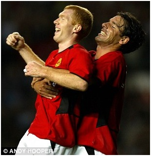
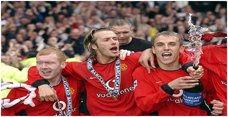

Chương 34

hi Steve McClaren rời Old Trafford đi làm HLV cho Middlesbrough năm 2001, Alex Ferguson vẫn dự tính sẽ nghỉ hưu. Nghĩ rằng mình không còn tại chức bao lâu, ông không bổ nhiệm trợ lý mới, mà quyết định kiêm nhiệm, với sự trợ giúp của Jim Ryan. Sau khi tái ký hợp đồng, ông mới mời Carlos Queiroz về làm phó.
Queiroz là người Bồ Đào Nha, sinh tại Mozambique, nói thành thạo năm thứ tiếng: BĐN, TBN, Anh, Pháp, Italy. Vì Manchester United đã trở thành một CLB Liên Hiệp Quốc, với cầu thủ đến từ nhiều nước khác nhau, Ferguson cần một trợ lý thông thạo ngoại ngữ như thế, thay vì chỉ tuyển người Anh hay Scotland như trước đây. Chuyên môn của Queiroz thì không cần phải bàn. Nhiều người ngạc nhiên, không hiểu vì sao một chuyên gia nổi tiếng, từng lãnh trách nhiệm HLV trưởng cho Sporting Lisbon và đội tuyển BĐN lại chấp nhận làm nhân vật số hai tại Old Trafford. “Suốt 17 năm, tôi đã quen làm trưởng”, Queiroz chia sẻ, “song khi Sir Alex ngỏ lời, tôi nhận ngay không chút đắn đo. Được làm việc cùng ngài là một cơ hội tốt để học hỏi thêm, không ai muốn bỏ lỡ”.
Cố nhiên, với kinh nghiệm và CV hoành tráng, Queiroz được Ferguson nể trọng. Sir Alex không coi ông như cấp dưới, mà như đồng nghiệp ngang hàng, làm việc gì cũng tham khảo ý kiến ông. Dần dần, Queiroz trở thành một cấp phó đầy quyền lực, có ảnh hưởng lớn với HLV trưởng, hơn hẳn những trợ lý trước. Chính nhờ Queiroz mà United khai thác được mỏ vàng các tài năng trẻ từ BĐN và Brazil.
Song song với việc tuyển trợ lý, Ferguson gia cố hàng thủ bằng trung vệ Rio Ferdinand. Thật ra, năm 1997, lúc Ferdinand mới 19 tuổi, đang thuộc biên chế West Ham, United đã hỏi mua anh. Phía West Ham ra giá: Một triệu bảng, cộng thêm David Beckham, khiến Quỷ Đỏ phải chạy dài. Chuyển sang Leeds, Ferdinand càng thể hiện đẳng cấp, giá trị ngày một tăng. Khi mua anh vào đầu mùa 2002-2003, Ferguson một lần nữa phải phá kỷ lục chuyển nhượng, trả cho Leeds 29.1 triệu bảng. Nếu tính cả các điều khoản phụ, trị giá hợp đồng lên tới gần 34 triệu.
Giống hệt mùa trước, mùa 2002-2003 khởi đầu với một vụ scandal hồi ký, lần này là hồi ký Roy Keane. Chấp bút bởi Eamon Dunphy, người từng viết tiểu sử Sir Matt Busby, hồi ký này rất hay, đầy những chi tiết ăn khách, nhanh chóng vươn lên thành cuốn sách bán chạy thứ nhì trong lịch sử ngành xuất bản Ireland, chỉ sau…Thánh Kinh! Trong sách, chi tiết gây vạ cho Keane là vụ phạm lỗi với Alfie Haaland.
Nơi chương 29, ta từng đề cập việc Keane bị chấn thương nặng năm 1997, khi truy cản Alfie Haaland của Leeds. Xin được nói thêm: Lúc ấy, Keane đau đớn lăn lộn trên sân, Haaland cho là tiền vệ người Ireland giả vờ, bèn cúi xuống, mắng sa sả vào mặt anh. Tưởng đâu theo thời gian, mọi việc cũng thôi, chẳng ngờ Keane mãi mang hận trong lòng. Năm tháng trôi qua, Haaland đã chuyển từ Leeds sang Manchester City, Keane vẫn đau đáu chờ đợi cơ hội trả đũa. Đến năm 2001, anh báo oán thành công, với cú đạp cực kỳ thô bạo vào đầu gốiHaaland[1]. Mọi người đều nghĩ đó chỉ là pha phạm lỗi vô ý, nhưnggiờ đây, trong hồi ký, Keane tiết lộ mình cố tình gây chấn thương cho đối phương. “Hắn đang có bóng bên đường biên”, anh viết, “Tôi đã chờ đợi quá đủ rồi. Đỡ này, thằng l…Cho chừa cái tội đứng trên đầu tao, rủa tao giả vờ. (Trả thù xong) Tôi quay lưng đi thẳng về phòng thay đồ, không chờ trọng tài Elleray rút thẻ”.
Cố tình phạm lỗi ác ý là tội nặng, nên FA phạt ngay Keane 150000 bảng, kèm án treo giò năm trận. Nhân thể đang bị đau hông, Keane tận dụng luôn dịp này, vào bệnh viện giải phẫu, rồi nghỉ dưỡng đến cuối năm. Nên biết, Keane là người rất kỹ tính. Trước khi xuất bản hồi ký, anh xem lại nhiều lần bản thảo của Dunphy, đề nghị sửa lại 17 chỗ, nhưng giữ nguyên đoạn về Haaland. Anh thừa biết chi tiết trên sẽ gây hậu quả, nhưng vẫn cứ để.
Alex Ferguson phản ứng thế nào về scandal của Keane? Không thế nào cả, ông chỉ khen cuốn hồi ký đọc hay. Với Ferguson, hễ tiết lộ chuyện kín nội bộ như Stam mới mang tội, còn những việc khác muốn viết gì thì viết. Bản thân Fergie hồi mới làm HLV, thấy cầu thủ mình bị chơi xấu, còn nổi giận xỏ giầy vào sân, đá gục đối phương để trả thù cho học trò. “Khi nhìn Keane, tôi thấy hình ảnh mình”, ông thường nói. Chính ông luôn hừng hực lửa như Keane, nên dễ cảm thông cùng anh.
Không Keane, lại vắng cả Gary Neville, David Beckham và Nicky Butt vì chấn thương, United lận đận trong mùa bóng mới, bị Arsenal và Liverpool bỏ xa trên bảng xếp hạng. Hàng thủ Quỷ Đỏ vẫn chưa thật sự chắc chắn: Rio Ferdinand là trung vệ xuất sắc, nhưng anh cần một người đá cặp nhanh nhẹn hơn Laurent Blanc, và một thủ môn đáng tin cậy ở đằng sau. Trong khi đó, hàng công lại không bùng nổ, do Nistelrooy ghi ít bàn hơn. Trước những đội yếu như Sunderland, Fulham, West Ham, các học trò Sir Alex chơi rất thiếu sức sống. Họ lại càng bạc nhược khi để thua Manchester City 1-3 (lần đầu tiên City thắng đối thủ cùng thành phố, kể từ chiến tích 5-1 năm 1989). Sau trận đấu, Ferguson nổi điên, mắng học trò là lũ ăn hại, dọa sẽ bán hết tất cả, mua cầu thủ mới về thay thế. “Chưa bao giờ tôi thấy thầy giận như vậy”, Gary Neville kể.
Từ trên đỉnh cao, thình lình Manchester United đứng trước nguy cơ trắng tay năm thứ hai liên tiếp, điều chưa từng xảy ra từ 1990. Những kẻ hoài nghi lên tiếng chế nhạo, cho rằng Ferguson đã quá già, lẽ ra nên giữ lời mà về hưu, ở lại chỉ chuốc lấy thất bại. Daily Mirror, như thường lệ, đăng hàng tít mỉa mai: “Đế chế United đang lung lay; Fergie sắp hết đời”.
Nhưng từ cuối tháng 11, 2002, những dấu hiệu khả quan xuất hiện. Van Nistelrooy chấm dứt cơn hạn bàn thắng, Scholes bắt đầu quen với vai trò hộ công và nhả đạn thường xuyên. Chơi thay các trụ cột chấn thương, một số cầu thủ dự bị cũng thể hiện phong độ rất tốt. Thay vì đá dưới hàng thủ, Phil Neville gây ấn tượng trong vai tiền vệ. John O’Shea thì hết sức đá năng, mỗi trận mỗi vị trí, trung vệ hay hậu vệ cánh, tiền vệ trụ hay tiền vệ biên đều đá tròn vai. Cùng Wes Brown và Darren Fletcher, O’Shea là sản phẩm “cây nhà lá vườn” tương đối thành công, tuy chưa thể sánh bằng Thế Hệ Vàng. Đầu năm mới 2003, với sự trở lại của Keane và Beckham, United vươn lên thứ hai, chính thức trở lại đường đua.
Giữa lúc mọi việc đang ngon trớn, sự cố lại xảy ra. Sau thất bại trước Arsenal ở vòng năm Cúp FA, Ferguson chỉ trích Beckham vì đã phạm lỗi dẫn đến bàn thua cho đội nhà. Trong lúc hai thầy trò tranh cãi, Fergie giận dữ đá một chiếc giày đi sượt mắt Beckham, làm anh chảy máu, phải khâu mấy mũi. Việc “Máy Sấy Tóc” đá giày đá dép là quá bình thường.Nếu nạn nhân là người khác, vụ này chắc không quá rùm beng, nhưng đây lại là David Beckham, cầu thủ nổi tiếng nhất hành tinh. Tin tức nhanh chóng lan truyền; các báo lá cải đều giật tít “Fergie Xử Becks”. Giới truyền thông đổ xô phân tích chuyện “chiếc giày bay”, cùng đi đến kết luận: thầy trò Beckham đã không còn đội trời chung.
Quả thật, mâu thuẫn giữa Ferguson và Beckham đã đến lúc không thể hàn gắn. Dù thế, trước khi mùa giải kết thúc, hai thầy trò đều tập trung vào chuyên môn, giữ thái độ rất chuyên nghiệp. “Chúng tôi vẫn hòa thuận với nhau”, Beckham nói, “Trong phòng thay đồ không tránh khỏi đôi khi có chuyện này chuyện kia. Đều đã là quá khứ cả rồi”. Sir Alex thì tỏ ra hài hước: “Chỉ là không may thôi. Tôi đá lại 100 lần cũng không trúng thêm lần nữa. Nếu nhắm được giỏi vậy thì giờ này tôi vẫn ra sân chơi tiền đạo, đâu cần phải làm HLV”.
Tuy ầm ĩ trên mặt báo, vụ Beckham không gây ảnh hưởng đến phong độ của United trong phần còn lại mùa bóng. Sau khi thua Middlesbrough ngày 26 tháng 12, đội bất khả chiến bại tại giải Ngoại Hạng, giành 51 trên tổng số 57 điểm. Dẫn đầu bảng gần hết mùa, Arsene Wenger mơ về một cú ăn ba cho Arsenal, không ngờ mỗi lúc mỗi bị Quỷ Đỏ truy bám quyết liệt. Kể ra Arsenal thi đấu rất tốt, thỉnh thoảng mới vấp váp, vấn đề nẳm ở chỗ United không vấp cú nào. Đầu tháng 4, 2003, CLB thắng oanh liệt Liverpool 4-0, rồi Newcastle 6-2 (Paul Scholes ghi ba bàn), soán ngôi Pháo Thủ. Càng về cuối, Van Nistelrooy càng phá lưới dữ dội, giúp bầy quỷ thắng như chẻ tre. Trong tám trận cuối cùng, “người Hà Lan bay” lập hai hattricks, ghi tổng cộng 13 trái, cướp danh hiệu Vua Phá Lưới giải Ngoại Hạng ngay trước mũi Thierry Henry (25 bàn, hơn Henry 1 bàn). United thì rinh chức vô địch trước mũi Arsenal, hoàn tất màn ngược dòng ngoạn mục chẳng kém mùa 1995-1996.
Tại Champions League, dẫu không đăng quang, United có màn trình diễn xuất sắc nhất kể từ cú ăn ba. Đội thắng Bayer Leverkusen cả hai trận, phục thù thành công thất bại năm ngoái, sau đó hạ tiếp Juventus. Vào đến tứ kết, họ gặp phải đương kim vô địch Real Madrid. CLB hoàng gia Tây Ban Nha lúc này đã trở thành một dải thiên hà chi chít những siêu sao thượng thặng: Ronaldo, Zidane, Figo, Carlos, Raul..., rõ ràng trên cơ so với đối thủ đến từ Anh. Lượt đi tại Bernabeu, Figo và Raul ghi bàn, giúp Real dẫn 3-0 chỉ trong hiệp một; Van Nistelrooy gỡ bàn danh dự trong hiệp hai, duy trì hy vọng mong manh cho United.
Cuộc đấu lượt về tại Old Trafford được nhiều người ví với trận cầu huyền thoại giữa Real Madrid và Eintracht Frankfurt năm 1960. Người hâm mộ như ngồi trên tàu lượn siêu tốc, lúc vút cao lúc tụt thấp theo từng bàn thắng. Ronaldo mở tỷ số cho Real, Nistelrooy gỡ hòa, Ronaldo lại nhân đôi cách biệt, rồi Helguera phản lưới đưa trận đấu về thế cân bằng. Siêu tiền đạo Brazil hoàn tất hattrick vào phút 59, dồn United vào đường cùng. Cơ hội gần như không còn, song Quỷ Đỏ không vì thế mất đi tinh thần chiến đấu. Vào sân thay Veron, David Beckham lập cú đúp giúp chủ nhà giành thắng lợi chung cuộc 4-3. Bàn thứ nhất là một cú sút phạt thần sầu, khiến thủ thành Casillas chỉ biết đứng ngẩn ngơ, bàn thứ hai từ pha dứt điểm cận thành.
Bị loại, United vẫn ngẩng cao đầu, vì là đội chiến thắng trong trận cầu thuộc loại hấp dẫn nhất mọi thời. Sir Alex tự hào về tất cả học trò, ngoại trừ Fabien Barthez. Sir rất kiên nhẫn với thủ môn người Pháp, nhưng sáu bàn trong hai trận gặp Real là những giọt nước làm tràn ly. Từ đấy, Roy Carroll được đôn lên bắt chính, Barthez không còn cơ hội khoác áo Quỷ Đỏ thêm một lần nào.
Nếu kể công trạng từng cầu thủ mùa 2002-2003, không thể không nhắc Van Nistelrooy. Anh ghi 44 bàn tại các giải, chỉ kém hai bàn so với kỷ lục mọi thời của Denis Law. Song nhiều người cho rằng xuất sắc nhất phải là Paul Scholes. Chàng tiền vệ tóc đỏ lập công 20 lần,đá một mùa hay nhất trong sự nghiệp. Chơi thông minh, quyết liệt; chạy chỗ tốt; phân phối bóng hoàn hảo, Scholes chẳng khác lá phổi trong đội hình Quỷ Đỏ.

Paul Scholes và Van Nistelrooy ăn mừng bàn thắng (Ảnh: Dailymail.co.uk)
Ăn mừng vô địch xong, trong số những cầu thủ rời Old Trafford mùa hè 2003 có Laurent Blanc (giải nghệ) và Juan Veron (sang Chelsea, 15 triệu). Tuy thế, cái tên "hot" nhất hẳn phải là David Beckham. Sau những mâu thuẫn liên tục cùng Sir Alex, không ai tin anh sẽ ở lại United.
Khác với Paul Scholes tính trầm lắng, không se sua bạc tiền, cả đời không người đại diện; Beckham thích kinh doanh, là người của công nghệ giải trí hào nhoáng. Từ khi yêu, rồi cưới Victoria, Becks từ ngôi sao bóng đá đã trở nên siêu sao showbiz. Anh chưa phải cầu thủ giỏi nhất mọi thời, song là người nổi tiếng và giàu có nhất. Không chỉ trong giới cầu thủ bóng đá, xét đến tất cả các vận động viên thể thao nói chung, cũng không ai được thần tượng hóa đến cuồng nhiệt như anh, không ai được nhắc đến hằng ngày trên mặt báo như anh.Chỉ cần Beckham ăn mặc lạ lùng một chút, chẳng hạn như quấn chiếc xà rông, ngay lập tức hình ảnh đó sẽ lan truyền khắp toàn cầu. Và khi người ta khám phá ra chiếc xà rông là của hãng Gaultier, các cửa tiệm Gaultier liền cháy hàng. Sau này, khi Beckham để tóc theo kiểu Mohican, người hâm mộ khắp nơi, từ Âu sang Á, đồng loạt bắt chước. Ở Nhật, tóc Mohican được bình chọn là xu hướng thịnh hành nhất trong năm, còn tại Úc, phụ nữ không những cạo đầu, mà còn đổ xô cạo…lông mu kiểu Mohican nữa! Hình ảnh Beckham xuất hiện trên các tạp chí thời trang và lối sống hàng đầu. Anh liên tục được trao các danh hiệu như: Người Ăn Mặc Đẹp Nhất, Người Đàn Ông Hấp Dẫn Nhất, thậm chí là…Thần Tượng Của Giới Gay. Fan hâm mộ Thái Lan đúc tượng vàng Beckham, đặt vào điện thờ một ngôi chùa ở Bangkok. Người Ấn Độ thì vẽ tranh thánh hóa cặp Posh-Becks, thể hiện David dưới dạng thượng linh thần Shiva, Victoria dưới dạng linh sơn thần nữ Parvati.
Tại Old Trafford, David Beckham là một biểu tượng thể thao, cũng như biểu tượng thương mại cực kỳ ăn khách.Cái tên Beckham là bảo chứng cho sự thành công. Mỗi năm, trong số lượng áo đấu Manchester United bán được trên toàn cầu, một nửa là áo số 7 mang tên anh. Các công ty, doanh nghiệp lớn đổ xô mời Becks ký hợp đồng quảng cáo: Nào là nước ngọt Pepsi, hàng không KLM, xăng dầu Castrol, bánh kẹo Meiji, viễn thông Vodafone, kính râm Police…Sir Alex Ferguson không thích những điều ấy. Ông không hài lòng việc Beckham xao lãng chuyên môn, bỏ đi làm mẫu ảnh, đóng quảng cáo hay xuất hiện trên các show truyền hình, lại càng chán ngán những kiểu tóc tai, thời trang mà ông cho là “kinh dị” của anh:Đâu phải cứ như thế mới là minh tinh, cứ nhìn Giggs hay Scholes, họ có khác gì người thường?
Sir Alex chưa bao giờ thích Victoria. Trong mắt Sir, Beckham ngày xưa là một chàng trai ngây thơ, dễ thương, luôn hòa đồng, không biết ăn chơi, chăm chỉ và cần cù hơn hẳn các bạn đồng lứa. Chỉ vì quen Posh Spice, anh mới rút vào vỏ bọc ngôi sao, dần trở nên khép kín, đắm mình trong những thú vui xa hoa. Đám cưới xong, Beckham mua nhà ở London, càng khiến Sir sôi máu: Chơi bóng ở Manchester, mà mua nhà London là nghĩa làm sao? Cứ chạy đi chạy lại như con thoi giữa hai nơi, thể lực làm sao bảo đảm?
Ferguson không ghét bỏ gì Beckham. Ông coi anh như con, nghĩ con đang đi sai đường, nên phải ra sức uốn nắn. Beckham thì như đứng giữa hai dòng nước, một bên là người thầy thân kính, bên kia là vợ yêu, khó mà dung hòa được hai đàng. Mâu thuẫn giữa thầy và trò tích tụ qua năm tháng, ngày càng lớn lên. Năm 2000, cả hai đã đụng độ một trận với nhau, khi Beckham bỏ tập, ở nhà trông con ốm. Chỉ thế thôi thì không sao, nhưng cùng lúc ấy, Ferguson lại đọc báo, thấy đăng hình Victoria đang dự tiệc. Thế là ông nổi xung, mắng học trò quá nuông chiều vợ, để việc tư ảnh hưởng việc công. “Thế là thế nào?”, Fergie hét, “Anh ngồi chăm con, trong khi con vợ anh ra ngoài đú đởn?” Nghe thầy đụng chạm đến vợ mình, Beckham cũng vặc lại ngay.
Xảy ra những chuyện như trên, Sir Alex cảm thấy Beckham đang dần dần trở nên lớn hơn cả đội bóng, điều ông không bao giờ cho phép. Với Sir, một khi thầy nói trò không nghe, đó là khởi đầu của loạn. Một trò không nghe, nhiều trò sẽ không nghe, tất cả sẽ cùng lờn, ông thầy không quản được ai nữa. Do đó, Sir đã tính đến chuyện dùng Beckham đổi Luis Figo của Barcelona, song đến phút chót thì đổi ý, bởi không muốn phá đi đội hình giành cú ăn ba lịch sử.
Tuy vậy, việc Beckham ra đi chỉ là sớm hay muộn. Beckham vẫn tôn kính thầy, và Ferguson vẫn thương học trò. Có điều, họ đã trở nên quá khác biệt, không thể cùng chung sống dưới mái nhà Old Trafford. Sự cố "chiếc giày bay" đóng vai trò xúc tác, đẩy Beckham khỏi đội sớm hơn dự kiến. Real Madrid đánh bại Barcelona trong cuộc đua giành chữ ký Becks. Ngày 1 tháng 1, 2003, chàng bạch mã hoàng tử thành Manchester chính thức đến Real, với giá chuyển nhượng 25 triệu bảng[2].
Sang Tây Ban Nha, rồi lần lượt chuyển đến Mỹ, Ý, Pháp, ở đâu Beckham cũng duy trì được vị thế ngôi sao lớn của showbiz. Nhưng nếu nhìn thuần túy về chuyên môn, anh chỉ còn là một bóng mờ. Thời đỉnh cao của cầu thủ David Beckham vĩnh viễn nằm lại Nhà Hát Những Giấc Mơ.

Beckham ăn mừng chức vô địch Ngoại Hạng năm 2003 cùng Scholes (trái) và Phil Neville (phải). Đây là danh hiệu cuối cùng của anh trong màu áo United (Ảnh: Premierleague.com)
Chú thích:
[1]Có lời ngoa truyền rằng Haaland phải giải nghệ sau pha vào bóng của Keane. Điều này không đúng. Sau khi bị phạm lỗi, Haaland vẫn chơi tới hết trận. Anh chỉ nghỉ hưu vào năm 2003.
[2] Carlos Queiroz cũng theo gót Beckham, nhận chức HLV trưởng Real Madrid. Tuy nhiên, chỉ sau một mùa ở Bernabeu, ông trở về làm phó cho Ferguson như cũ.